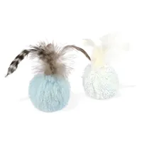
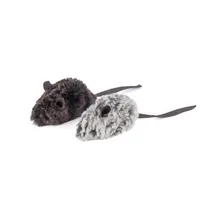
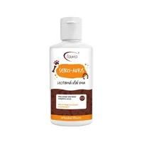
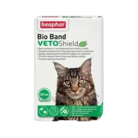

Speelgoed & Accessoires
(116 producten)
SodaPup sensorische kom Kikker - paars
Wilt u uw hond een gevarieerde maaltijd gunnen waarbij hij zich zeker niet verveelt? Met de sensorische kom van SodaPup…

Anti-schrokkom 23cm ZONDER "Gezondheid begint in de kom" met Yoggies-logo
Kom van edelstaal met een bolling in het midden die schrokken tegengaat en het overhaast opeten van voedsel tot…

SodaPup vleermuis, supersterk nylon kauwspeeltje – zwart M
Het nylon kauwspeeltje van SodaPup is hard en stevig genoeg om hondentanden te weerstaan en alle liefhebbers van…

SodaPup Hold'em - Onderlegger voor kommen met zuignappen, blauw
Gedaan met wegschuivende kommen Heeft uw hond bij het eten het gevoel dat hij zijn kom door de halve keuken moet duwen?…

SodaPup likkom Citrus Softie - oranje
Langzaam voeren, meer rust en plezier voor elke hond Honden houden van ontdekken, zoeken en likken. Likken is een van…

Yoggies ecologische kattenbakvulling 6 x 3 kg
Over de kattenbak weet u liever niets, en precies zo werkt het wanneer u er onze kattenbakvulling van gerecycleerde…

IK & HOND: Voordat u een hond neemt - en wat er daarna allemaal komt
Een overzichtelijk en volledig boek voor een écht goed hondenleven. Het wil bijdragen aan de preventie en de oplossing…

Yoggies ecologische kattenbakvulling 3 kg
Over de kattenbak weet u liever niets, en precies zo werkt het wanneer u er onze kattenbakvulling van gerecycleerde…

LickiMat Casper Cat likmat
LickiMat Casper Cat is speciaal ontworpen voor katten. De plooien zorgen voor een gevarieerd oppervlak, wat katten een…

PetBuddy gerecycleerde hondenpoepzakjes, 8 rollen / à 15 zakjes, groen met opdruk
De hondenpoepzakjes van PetBuddy bestaan voor 80 % uit gerecycleerd materiaal en zijn dus milieuvriendelijk. Afmeting…

Het ALLERBESTE leven voor uw hond - werkboek
Dit praktische werkboek is de ideale gids voor elke zorgzame eigenaar die zijn hondenvriend een werkelijk rijk…

P.L.A.Y. pluizige balletjes voor katten
Plezier dat de pootjes in beweging brengt Pluizige balletjes zijn het ideale speeltje voor alle katten die houden van…

P.L.A.Y. pluche muisjes voor katten
Kleine jacht, grote belevenissen Katten hebben de jacht in het bloed - en precies daarom zijn deze speelse muisjes er…

SodaPup Honeypot PUP - X - geel
Gun uw hond langdurig plezier met het interactieve vulspeeltje van SodaPup! Dit stevige speeltje met een origineel…

Cadeaubon ter waarde van 1 500
Schenk een spijsvertering die in de kom begint 💚 Weet u niet of brokken, snacks of iets voor de spijsvertering meer…

Cadeaubon ter waarde van 1 000
Schenk een spijsvertering die in de kom begint 💚 Weet u niet of brokken, snacks of iets voor de spijsvertering meer…

Cadeaubon ter waarde van 500
Schenk een spijsvertering die in de kom begint 💚 Weet u niet of brokken, snacks of iets voor de spijsvertering meer…

Cadeaubon ter waarde van 200
Schenk een spijsvertering die in de kom begint 💚 Weet u niet of brokken, snacks of iets voor de spijsvertering meer…

DogBar XL
Een klein detail dat een groot verschil maakt voor de gezondheid Elk baasje wil het beste voor zijn maatje. En vaak…
DogBar L
Een klein detail dat een groot verschil maakt voor de gezondheid Elk baasje wil het beste voor zijn maatje. En vaak…
DogBar M
Een klein detail dat een groot verschil maakt voor de gezondheid Elk baasje wil het beste voor zijn maatje. En vaak…
DogBar S
Een klein detail dat een groot verschil maakt voor de gezondheid Elk baasje wil het beste voor zijn maatje. En vaak…

SodaPup Honeypot PUP - XL geel
Gun uw hond langdurig plezier met het interactieve vulspeeltje van SodaPup! Dit stevige speeltje met een origineel…

SodaPup Honeypot PUP - X rood
Gun uw hond langdurig plezier met het interactieve vulspeeltje van SodaPup! Dit stevige speeltje met een origineel…

SodaPup zachte Mandala met zuignappen - pastelroze
Wilt u uw hond een gevarieerde maaltijd gunnen waarbij hij zich zeker niet verveelt? Met de sensorische kom van SodaPup…

SodaPup Lick Stick - blauwe bloem
Gun uw hond plezier, rust en tegelijk steun voor gezond snoepen. Het likspeeltje SodaPup Lick Stick in de vorm van een…

SodaPup sensorische kom - Zonnebloem, geel
Wilt u uw hond een gevarieerde maaltijd gunnen waarbij hij zich zeker niet verveelt? Met de sensorische kom van SodaPup…

SodaPup Honey bone, stevig nylon kauwspeeltje M
Het nylon kauwspeeltje van SodaPup is hard en stevig genoeg om hondentanden te weerstaan en alle liefhebbers van…

SodaPup zachte Mandala met zuignappen - pastelgroen
Wilt u uw hond een gevarieerde maaltijd gunnen waarbij hij zich zeker niet verveelt? Met de sensorische kom van SodaPup…

SodaPup likmat Lotus - lichtroze
Wilt u uw hond een gevarieerde maaltijd gunnen waarbij hij zich zeker niet verveelt? Met de sensorische kom van SodaPup…

SodaPup likkom paradijstuin - paars
Wilt u uw hond een gevarieerde maaltijd gunnen waarbij hij zich zeker niet verveelt? Met de sensorische kom van SodaPup…

SodaPup Lick Stick - bijenkorf
Gun uw hond plezier, rust en tegelijk steun voor gezond snoepen. Het likspeeltje SodaPup Lick Stick in de vorm van een…
SodaPup Honeypot PUP - XL rood
Gun uw hond langdurig plezier met het interactieve vulspeeltje van SodaPup! Dit stevige speeltje met een origineel…

SodaPup Honeypot PUP - XL roze
Gun uw hond langdurig plezier met het interactieve vulspeeltje van SodaPup! Dit stevige speeltje met een origineel…

SodaPup likmat met zuignappen Citroen - limoengroen
Een likmat hoort thuis in de uitrusting van elke hond – hij houdt bezig, ontspant en kalmeert. Bij het likken komen in…

SodaPup likmat met zuignappen Tulpen - paars
Wilt u uw hond een gevarieerde maaltijd gunnen waarbij hij zich zeker niet verveelt? Met de sensorische kom van SodaPup…

SENZI-AURIS oorreinigingsoplossing voor honden en katten 100 ml
Schone oren zonder irritatie – op natuurlijke wijze Sommige dieren hebben aanleg voor oorproblemen die vaak terugkeren…

FAUNA PADS pootbalsem 50 ml
Natuurlijke verzorging voor de poten van uw maatje Deze aangenaam geurende balsem met een hoog gehalte aan…

FELLEOL vloeibare was voor de vachtverzorging van honden en katten 100 ml
Een gezonde vacht begint met natuurlijke verzorging De vloeibare was FELLEOL is een natuurlijk product voor de zachte…

INSI SPRAY bij verhoogde parasietendruk 100 ml
Bescherming zonder chemie – voor rustige wandelingen zonder parasieten Een product op alcoholbasis met een heerlijke…

LickiMat likmat Mini Soother Tuff Green
Extra stevig! De geliefde likmatten van LickiMat komen er nu in de versterkte variant Tuff. Aanbevolen voor actieve…

LickiMat likkom Yoggie Pot Green
Yoggie Pot is een interactieve likkom voor langzaam eten van LickiMat, die uw hond tegelijk bezighoudt, kalmeert en…

Kruidenmagie: De natuurlijke apotheek van gezondheid
De natuur heeft antwoorden op heel wat problemen Spreekt u haar taal niet? Geen nood: auteur Dita Oskerova heeft de…

Yoggies stoffen reiskom
Een praktische reiskom van ecologische materialen. Deze kom is gemaakt van 100 % katoen. Het gaat om zogenaamd tentdoek…

SodaPup Mandala, sensorische kom van nylon – blauw
Wilt u uw hond een gevarieerde maaltijd gunnen waarbij hij zich zeker niet verveelt? Met de sensorische kom van SodaPup…

SodaPup cherry pie, supersterk nylon kauwspeeltje voor honden
Het nylon kauwspeeltje van SodaPup is hard en stevig genoeg om hondentanden te weerstaan en alle liefhebbers van…

SodaPup Kaas, stevig nylon kauwspeeltje 14x10,2 cm
Het nylon kauwspeeltje van SodaPup is hard en stevig genoeg om hondentanden te weerstaan en alle liefhebbers van…

Klein trekspeeltje voor de hond - konijn met fleece handvat
Trekspeeltjes dienen voor gezamenlijke spelletjes of voor training van de hond met zijn baasje. Zoekt u een klein…

Beaphar antiparasitaire halsband voor katten Bio Band Plus VetoSh. 35cm
Een natuurlijke insectenwerende halsband voor katten en kittens vanaf 2 maanden; hij kan ook gebruikt worden bij dieren…

SodaPup MOD bone, stevig kauwspeeltje, L 19,1 x 4,4 cm
Een speeltje van nylon, dat extreem hard en stevig is. Kauwen doet bij een hond endorfine vrijkomen, en daarom houden…
SodaPup Honey bone, stevig nylon kauwspeeltje, small
Het nylon kauwspeeltje van SodaPup is hard en stevig genoeg om hondentanden te weerstaan en alle liefhebbers van…

SodaPup Honey bone, stevig nylon kauwspeeltje, large
Het nylon kauwspeeltje van SodaPup is hard en stevig genoeg om hondentanden te weerstaan en alle liefhebbers van…

SodaPup nylon vlinder, kauwspeeltje - paars
Het nylon kauwspeeltje van SodaPup is hard en stevig genoeg om hondentanden te weerstaan en alle liefhebbers van…

SodaPup likmat love klein, rood
Een likmat hoort thuis in de uitrusting van elke hond – hij houdt bezig, ontspant en kalmeert. Bij het likken komen in…

SodaPup nylon kauwspeeltje, stevig - lichtbruin
Het nylon kauwspeeltje van SodaPup is hard en stevig genoeg om hondentanden te weerstaan en alle liefhebbers van…

PetBuddy gerecycleerde hondenpoepzakjes, 4 rollen / à 15 zakjes, groen met opdruk
De hondenpoepzakjes van PetBuddy bestaan voor 80 % uit gerecycleerd materiaal en zijn dus milieuvriendelijk. Afmeting…

SodaPup Flowerpot, vulspeeltje, Original - oranje
Gun uw hond langdurig plezier met het interactieve vulspeeltje van SodaPup! Dit stevige speeltje met een origineel…

SodaPup Flowerpot, vulspeeltje, Original - groen
Gun uw hond langdurig plezier met het interactieve vulspeeltje van SodaPup! Dit stevige speeltje met een origineel…

SodaPup Bloem sensorische kom - roze
Wilt u uw hond een gevarieerde maaltijd gunnen waarbij hij zich zeker niet verveelt? Met de sensorische kom van SodaPup…

SodaPup Honeypot PUP-X - roze
Gun uw hond langdurig plezier met het interactieve vulspeeltje van SodaPup! Dit stevige speeltje met een origineel…

SodaPup Mocha-mok sensorische kom - wit
Wilt u uw hond een gevarieerde maaltijd gunnen waarbij hij zich zeker niet verveelt? Met de sensorische kom van SodaPup…

SodaPup sensorische kom Yin Yang
Wilt u uw hond een gevarieerde maaltijd gunnen waarbij hij zich zeker niet verveelt? Met de sensorische kom van SodaPup…

SodaPup Vier jaargetijden, sensorische kom - groen
Wilt u uw hond een gevarieerde maaltijd gunnen waarbij hij zich zeker niet verveelt? Met de sensorische kom van SodaPup…

SodaPup likmat met zuignappen Zon en zee - geel
Een likmat hoort thuis in de uitrusting van elke hond – hij houdt bezig, ontspant en kalmeert. Bij het likken komen in…

SodaPup ronde likmat Paradijstuin - groen
Een likmat hoort thuis in de uitrusting van elke hond – hij houdt bezig, ontspant en kalmeert. Bij het likken komen in…

SodaPup likmat herfst, geel
Een likmat hoort thuis in de uitrusting van elke hond – hij houdt bezig, ontspant en kalmeert. Bij het likken komen in…

SodaPup USA-K9 trek- en drijfspeeltje firecracker, groot Original – rood
Hebt u thuis een liefhebber van touwtrekken? Met het stevige trekspeeltje van SodaPup in een origineel ontwerp beleeft…

SodaPup vulstandaard voor speeltjes – set van 4 stuks
Verpakking met vier standaards waarmee u het speelgoed kunt vullen zonder dat de vulling eruit lekt.

SodaPup sensorische kom Noords landschap - oranje
Wilt u uw hond een gevarieerde maaltijd gunnen waarbij hij zich zeker niet verveelt? Met de sensorische kom van SodaPup…

SodaPup sensorische kom Honden aan de bar – blauw
Wilt u uw hond een gevarieerde maaltijd gunnen waarbij hij zich zeker niet verveelt? Met de sensorische kom van SodaPup…

SodaPup vleermuis, supersterk nylon kauwspeeltje – zwart L
Het nylon kauwspeeltje van SodaPup is hard en stevig genoeg om hondentanden te weerstaan en alle liefhebbers van…

SodaPup Mandala, sensorische kom van nylon - geel
Wilt u uw hond een gevarieerde maaltijd gunnen waarbij hij zich zeker niet verveelt? Met de sensorische kom van SodaPup…

SodaPup Mandala, sensorische kom van nylon - paars
Wilt u uw hond een gevarieerde maaltijd gunnen waarbij hij zich zeker niet verveelt? Met de sensorische kom van SodaPup…

SodaPup Mandala, sensorische kom van nylon - roze
Wilt u uw hond een gevarieerde maaltijd gunnen waarbij hij zich zeker niet verveelt? Met de sensorische kom van SodaPup…

SodaPup Love likmat, rood
Een likmat hoort thuis in de uitrusting van elke hond – hij houdt bezig, ontspant en kalmeert. Bij het likken komen in…

SodaPup likmat zombie, oranje
Een likmat hoort thuis in de uitrusting van elke hond – hij houdt bezig, ontspant en kalmeert. Bij het likken komen in…

SodaPup likmat zombie, zwart
Een likmat hoort thuis in de uitrusting van elke hond – hij houdt bezig, ontspant en kalmeert. Bij het likken komen in…

SodaPup likmat met zuignappen, Walvis – blauw
Een likmat hoort thuis in de uitrusting van elke hond – hij houdt bezig, ontspant en kalmeert. Bij het likken komen in…

SodaPup likmat met zuignappen Duckies – geel
Een likmat hoort thuis in de uitrusting van elke hond – hij houdt bezig, ontspant en kalmeert. Bij het likken komen in…

SodaPup likmat puzzel, roze
Een likmat hoort thuis in de uitrusting van elke hond – hij houdt bezig, ontspant en kalmeert. Bij het likken komen in…

SodaPup likmat puzzel, blauw
Een likmat hoort thuis in de uitrusting van elke hond – hij houdt bezig, ontspant en kalmeert. Bij het likken komen in…

SodaPup likmat puzzel, groen
Een likmat hoort thuis in de uitrusting van elke hond – hij houdt bezig, ontspant en kalmeert. Bij het likken komen in…

SodaPup likmat love klein, paars
Een likmat hoort thuis in de uitrusting van elke hond – hij houdt bezig, ontspant en kalmeert. Bij het likken komen in…

SodaPup likmat blokjes, paars
Een likmat hoort thuis in de uitrusting van elke hond – hij houdt bezig, ontspant en kalmeert. Bij het likken komen in…

SodaPup likmat honey, geel
Een likmat hoort thuis in de uitrusting van elke hond – hij houdt bezig, ontspant en kalmeert. Bij het likken komen in…

SodaPup likmat honey klein, geel
Een likmat hoort thuis in de uitrusting van elke hond – hij houdt bezig, ontspant en kalmeert. Bij het likken komen in…

SodaPup likmat flower power, roze
Een likmat hoort thuis in de uitrusting van elke hond – hij houdt bezig, ontspant en kalmeert. Bij het likken komen in…

SodaPup likmat flower power klein, roze
Een likmat hoort thuis in de uitrusting van elke hond – hij houdt bezig, ontspant en kalmeert. Bij het likken komen in…

SodaPup Hotdog, supersterk nylon kauwspeeltje
Het nylon kauwspeeltje van SodaPup is hard en stevig genoeg om hondentanden te weerstaan en alle liefhebbers van…

SodaPup Fish Bone, supersterk nylon kauwspeeltje voor honden
Het nylon kauwspeeltje van SodaPup is hard en stevig genoeg om hondentanden te weerstaan en alle liefhebbers van…

Hondenspeeltje met konijnenbont - ring
Trekspeeltjes dienen voor gezamenlijke spelletjes of voor training van de hond met zijn baasje. Dit uitstekende…

SodaPup Hartje met trektouw, Original - rood
Hebt u thuis een liefhebber van touwtrekken? Met het stevige trekspeeltje van SodaPup in een origineel ontwerp beleeft…

Stevig hondenspeeltje – softshell rog, blauw en groen
Slijpt uw viervoeter zijn tanden op een stevig stuk rog? Koop hem een softshell rog en hij doet alles wat u van zijn…

Pluche hondenspeeltje – vleermuis, groen
Een handgenaaid hondenspeeltje, een vleermuis met een fleecestaartje, dat geen enkel touwtrekspel verpest. Het bewijst…

Pluche balletje voor de kat met valeriaan
Een pluche balletje voor katten met valeriaan wordt door alle huisroofdieren enthousiast onthaald. Valeriaan bevat een…

Pluche hondenspeeltje – muis, groen
Een kleine pluche muis voor honden past precies in uw zak of snackzakje. Het ideale speeltje voor kleine honden en…

Hondenmand van Roxy 80 x 70 cm
Een comfortabele hondenmand van gerecycleerd katoen. De keuze van deze mand doorstond de strengste zeef. De mand van…

Hondenmand van Roxy 120 x 80 cm
Een comfortabele hondenmand van gerecycleerd katoen. De keuze van deze mand doorstond de strengste zeef. De mand van…

LickiMat Felix Cat likmat, paars
LickiMat Felix Cat is speciaal ontworpen voor katten. De plooien zorgen voor een gevarieerd oppervlak, wat katten een…

SodaPup Honingraat, sensorische kom van nylon - geel
Wilt u uw hond een gevarieerde maaltijd gunnen waarbij hij zich zeker niet verveelt? Met de sensorische kom van SodaPup…

SodaPup Mandala, sensorische kom van nylon - groen
Wilt u uw hond een gevarieerde maaltijd gunnen waarbij hij zich zeker niet verveelt? Met de sensorische kom van SodaPup…

SodaPup Life Saver vulspeeltje - rood 10,8 cm x 3,8 cm
Vulspeeltjes zijn een uitstekend hulpmiddel om het dagelijkse leven van uw hond te verrijken. U kunt er een deel van de…

SodaPup Schedel met trektouw - roze
Hebt u thuis een liefhebber van touwtrekken? Met het stevige trekspeeltje van SodaPup in een origineel ontwerp beleeft…

SodaPup Schedel met trektouw - zwart
Hebt u thuis een liefhebber van touwtrekken? Met het stevige trekspeeltje van SodaPup in een origineel ontwerp beleeft…

De hondenredder, Petr Svoboda
Het verhaal van een man die met zijn hondenmaatje altijd anderen wilde helpen. Weet u wat het werk van een…

Het ALLERBESTE leven voor uw hond, Allie Bender en Emily Strong
Gewetensvolle hondeneigenaars streven ernaar het leven van hun harige lievelingen zo rijk mogelijk te maken (de…

LickiMat UFO likkom
Ontdek de buitenaardse dimensie van voeren en plezier met de UFO-kom met zuignappen; hier zal uw hond van genieten. De…

LickiMat Wobble likkom, groen
Een wiebelkom met noppen wordt een grote uitdaging voor elke snoeper! De binnenkant van de kom heeft fijne noppen die…

LickiMat Felix Cat likmat, groen
LickiMat Felix Cat is speciaal ontworpen voor katten. De plooien zorgen voor een gevarieerd oppervlak, wat katten een…

LickiMat Slomo likmat 20x20 cm
LickiMat Slomo is een soort 2-in-1. De gekleurde delen werken als likmat, de grijze uitsparingen gaan schrokken tegen…

LickiMat Playdate TUFF likmat 20x20 cm
De mat Playdate TUFF is van gehard natuurlijk rubber (caoutchouc), gevat in een gekleurd kunststof kader met…

LickiMat Playdate likmat 20x20cm
LickiMat Playdate is een zachte likmat met een blokjesmotief van 20x20 cm en is geschikt voor alle rassen. Playdate is…

Boek Over de ziel van het bos, Daniela Králová
Het „levende boek“ Over de ziel van het bos is een voorbeeld dat de natuur beschermen zin heeft. Bij het lezen én het…

Yoggies antislipkom 22 cm
Kom van edelstaal met antislipafwerking. Formaat ø 22 cm. Een hoogwaardige kom met een rubberen ring aan de onderkant…

Yoggies antislipkom 16,5 cm
Kom van edelstaal met antislipafwerking. Formaat ø 16,5 cm. Een hoogwaardige kom met een rubberen ring aan de…
Yoggies anti-schrokkom 17 cm
Kom van edelstaal met een bolling in het midden die schrokken tegengaat en het overhaast opeten van voedsel tot…